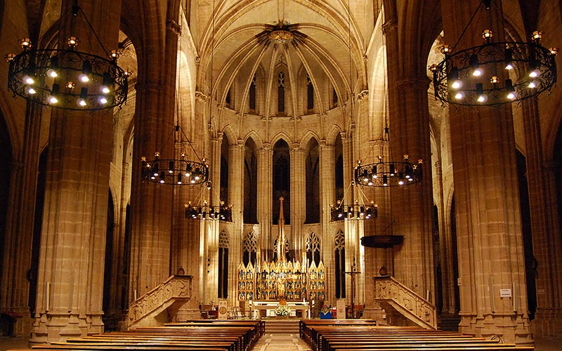
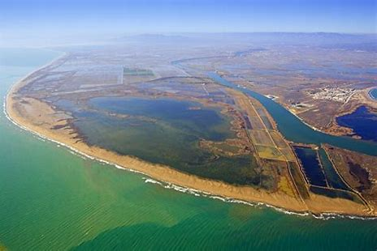
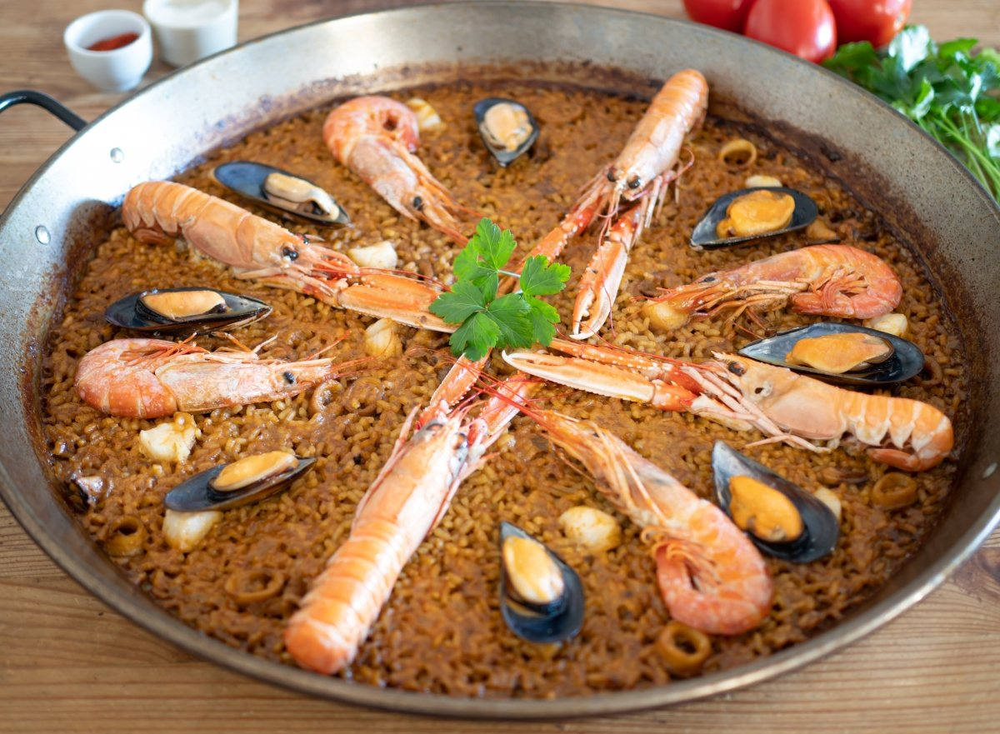
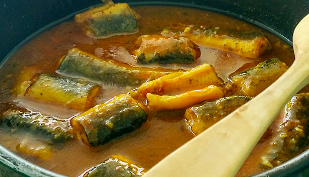

Bienvenidos a la Comarca del Baix Ebre
La comarca del Baix Ebre está situada en el sur de la provincia de Tarragona, en Cataluña. Es conocida por su río Ebro, que atraviesa la comarca, y por su riqueza cultural y natural.
Ubicación: Sur de Tarragona, Cataluña
Habitantes: Aproximadamente 80,000
Poblaciones relevantes: Tortosa, Deltebre, L'Ampolla, L'Aldea
La comarca del Baix Ebre se encuentra en el sur de la provincia de Tarragona, en la comunidad autónoma de Cataluña, España. Es una región rica en diversidad natural y cultural, ubicada en el valle del río Ebro, que atraviesa la comarca y desemboca en el mar Mediterráneo. La presencia del río Ebro y su delta, una de las zonas húmedas más importantes de Europa, es una característica distintiva de la comarca, proporcionando ecosistemas únicos que albergan una gran variedad de flora y fauna.
La orografía de la comarca es variada, con zonas de llanura alrededor del delta y áreas montañosas en el interior. La sierra del Montsià y la cordillera de Els Ports son algunos de los sistemas montañosos que delimitan el territorio. Estas montañas no solo brindan paisajes escarpados y rutas de senderismo, sino que también protegen la región de los fuertes vientos y moderan el clima en ciertas áreas. La altitud de las montañas, junto con las zonas bajas del delta, crean una gran variedad de microclimas dentro de la comarca.
El clima del Baix Ebre es de tipo mediterráneo, con inviernos suaves y veranos calurosos. La proximidad al Mediterráneo y la presencia del río Ebro generan un ambiente húmedo, especialmente en el delta, donde se registran mayores niveles de precipitaciones en comparación con el interior. Este clima, junto con los suelos fértiles del delta, ha permitido el desarrollo de una importante actividad agrícola en la región.
Los cultivos predominantes en el Baix Ebre incluyen el arroz, que es el producto estrella de la comarca y que se cultiva extensamente en las tierras del Delta del Ebro. La calidad del arroz del delta es reconocida a nivel nacional e internacional, y su cultivo forma parte de la identidad cultural de la zona. Además del arroz, se cultivan cítricos como naranjas y mandarinas, así como hortalizas y olivos en las áreas montañosas y las zonas de transición entre el delta y el interior. La actividad agrícola es una fuente de empleo y un motor económico para los habitantes de la comarca.
El río Ebro, que cruza la comarca, es fundamental para la economía y el ecosistema de la región. Además de permitir el desarrollo agrícola, el río Ebro es un atractivo turístico, especialmente en el Delta del Ebro, donde los visitantes pueden observar una gran cantidad de aves y disfrutar de actividades al aire libre como paseos en barco y senderismo. La biodiversidad del delta y la importancia ecológica de sus humedales hacen que esta zona sea un área protegida y un punto de interés para el ecoturismo.
En resumen, la comarca del Baix Ebre es una región donde la agricultura, la naturaleza y la cultura conviven en armonía. Sus paisajes variados, su clima mediterráneo y su actividad agrícola hacen de esta comarca un lugar especial dentro de Cataluña, con una identidad propia y un gran valor ecológico y cultural.
Qué Visitar
Catedral de Tortosa
La Catedral de Santa María de Tortosa es uno de los monumentos más emblemáticos de la ciudad y un excelente ejemplo de la arquitectura gótica en Cataluña. Su construcción comenzó en el siglo XIV sobre los restos de una antigua iglesia románica, y se prolongó hasta el siglo XVIII, lo que le confiere una mezcla de estilos arquitectónicos, incluyendo elementos barrocos en su fachada principal. Ubicada en el corazón del casco antiguo, junto al río Ebro, la catedral se erige como un testimonio de la rica historia cultural y religiosa de Tortosa.

El interior de la catedral es igualmente impresionante, con una planta de tres naves y una serie de capillas laterales dedicadas a diferentes santos. Destacan el coro, que conserva detalles de la época medieval, y la capilla de la Virgen de la Cinta, patrona de la ciudad. Bajo la catedral se encuentran restos arqueológicos romanos y visigodos, que se pueden visitar en el museo del subsuelo, ofreciendo una mirada fascinante a las distintas épocas históricas de Tortosa.
Ver más Delta del Ebro
El Delta del Ebro es una de las áreas naturales más importantes de la península ibérica y el mayor humedal de Cataluña. Situado en la desembocadura del río Ebro, este parque natural cubre más de 320 kilómetros cuadrados de marismas, arrozales, lagunas y playas vírgenes. El delta es un lugar privilegiado para la biodiversidad, siendo hogar de más de 300 especies de aves, como flamencos, garzas y patos. Estas condiciones hacen que el Delta del Ebro sea un destino popular para la observación de aves y el ecoturismo.

Además de su valor ecológico, el Delta del Ebro es conocido por su producción de arroz, que forma parte de la identidad cultural de la región y se cultiva en extensos campos inundados. Los visitantes pueden recorrer sus caminos a pie o en bicicleta, disfrutando de un paisaje único que cambia con las estaciones. Las playas del delta, como la Punta del Fangar, ofrecen una experiencia inigualable, con dunas y paisajes naturales que se extienden hasta el horizonte. Declarado Parque Natural en 1983, el Delta del Ebro sigue siendo un espacio protegido y un tesoro natural para Cataluña y España.
Ver más Gastronomía
Paella del Delta del Ebro
La paella del Delta del Ebro es un plato tradicional que destaca por utilizar el arroz local, famoso por su calidad y sabor. A diferencia de la paella valenciana, esta receta suele incluir mariscos frescos y productos típicos de la región, como mejillones y anguila, ingredientes que se cosechan directamente en las aguas del Delta. La preparación incluye sofrito de tomate, ajo y pimientos, lo cual realza el sabor del arroz y aporta un toque de frescura que representa la esencia de la gastronomía del Baix Ebre.

Este plato es una celebración de los productos de la tierra y el mar que se encuentran en el delta. La combinación de arroz con el marisco y la anguila le da un sabor único y auténtico que refleja el entorno natural de la comarca. La paella es uno de los platos más demandados por los visitantes y se puede encontrar en casi todos los restaurantes de la zona.
Ver más Anguila en Suquet
La anguila en suquet es uno de los platos más tradicionales del Delta del Ebro y se prepara con anguila, un pez típico de las aguas del río Ebro. Este guiso se elabora en una salsa espesa a base de tomate, ajo, pimientos y, en algunas versiones, almendras trituradas, que le da una textura y un sabor profundo y característico. La anguila se cocina en el suquet hasta quedar tierna, absorbiendo todos los sabores de la salsa.

Este plato es especialmente popular en los meses más fríos y es apreciado por su riqueza de sabor y su conexión con el río Ebro. La anguila en suquet es una muestra de la cocina local que combina ingredientes sencillos en un plato robusto y lleno de tradición, ideal para los amantes de los sabores intensos y de los productos de la comarca.
Ver más